Life is a journey with problems to solve, lessons to learn, but most of all, experiences to enjoy! My participation in several UiTM programs has given me new experiences and knowledge. The experience received also make me as a new human being who can see various things with diferrent perspectives. With these experiences, I was also able to improve my communications skills, leadership and teamwork skills. Thus, let’s look at the experiences I gained from the programs I participated which has been organized by: |
|
| International Innovation And Design In Library And Information Science Competition (Indelib) Participants | |||
|---|---|---|---|
| 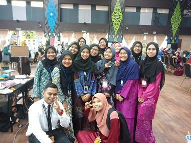 | |||
| 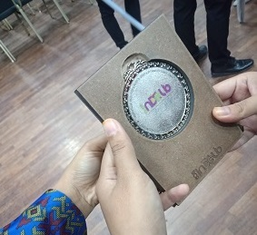 | |||
This competition was organized by Faculty of Information Management, UiTM Kedah. In 2019, all first semester student from class A until C required to participate in this competiton. All the participants required to create innovative materials for design and facilities for libraries. In this competition, my group and I managed to get second place for our innovation. |
|||
| School Attack Program Facilitator | |||
|---|---|---|---|
| 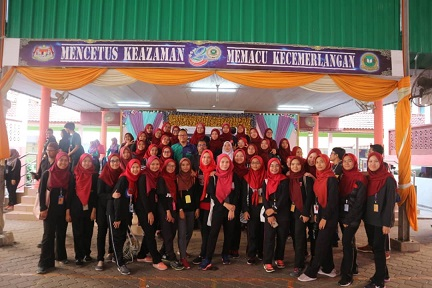 | 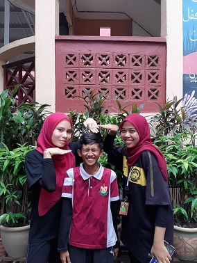 | 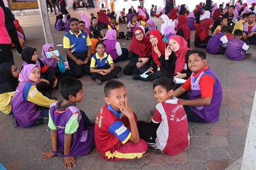 | |
| This program was organized by Career and Counseling Unit UiTM Kedah. All the facilitators involved is from UiTM Counseling Club. The participants involved are students from SK Taman Intan, Sungai Petani, Kedah. This school attack program gives a very interesting experience to both facilitators and the students itself. | |||
| Community Service Program Participants | |||
|---|---|---|---|
| 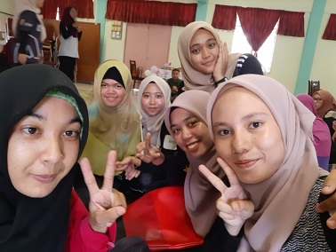 | 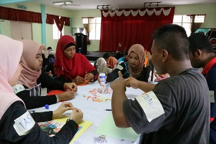 | 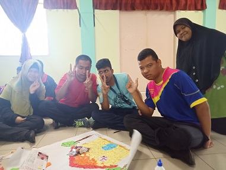 | |
| This program also was organized by Career and Counseling Unit UiTM Kedah. All the participants involved is from UiTM Counseling Club. This program was held at Rumah Seri Kenangan Bedong, Bedong, Kedah. This program has strengthen our relationships with the less fortunate, strengthen our social network and added value to ourself. | |||
| Volunteers in a Visit to the Aboriginal People Village Program | |||
|---|---|---|---|
| 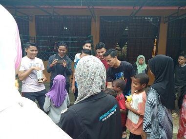 | 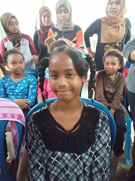 | 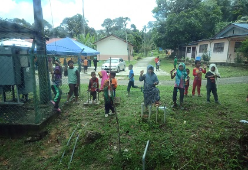 | |
| This program was organized by Murni College Reprensentative Committee (JPK). All the volunteers involved is from UiTM Kedah student. This volunteering program was held at Kampung Orang Asli Ulu Legong, Baling, Kedah. This program This program has approached this community by providing various interesting activities such as health talks, cooking and learning workshops, coloring and drawing competition. | |||